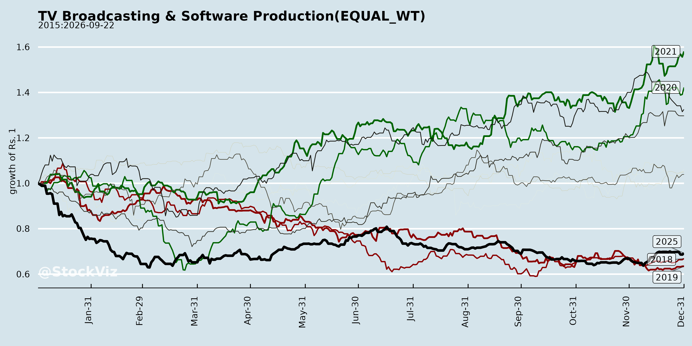
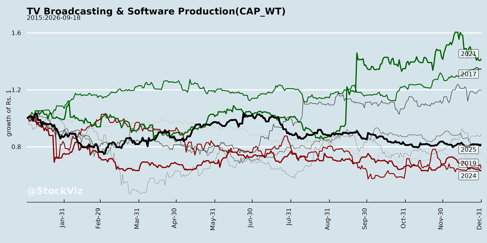
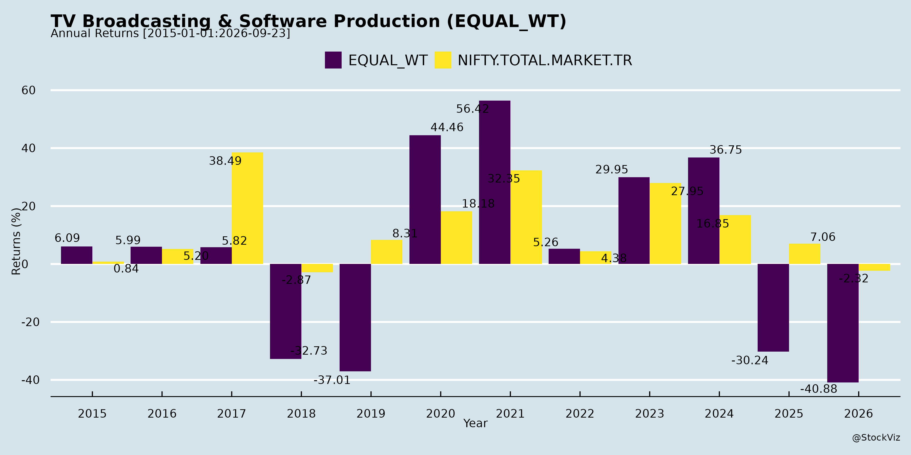
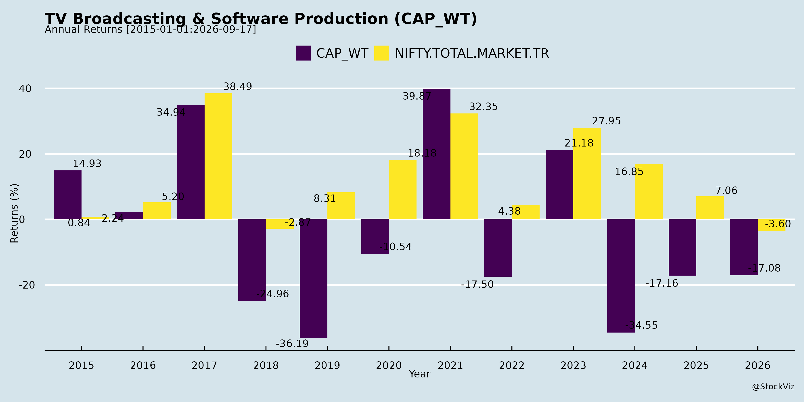
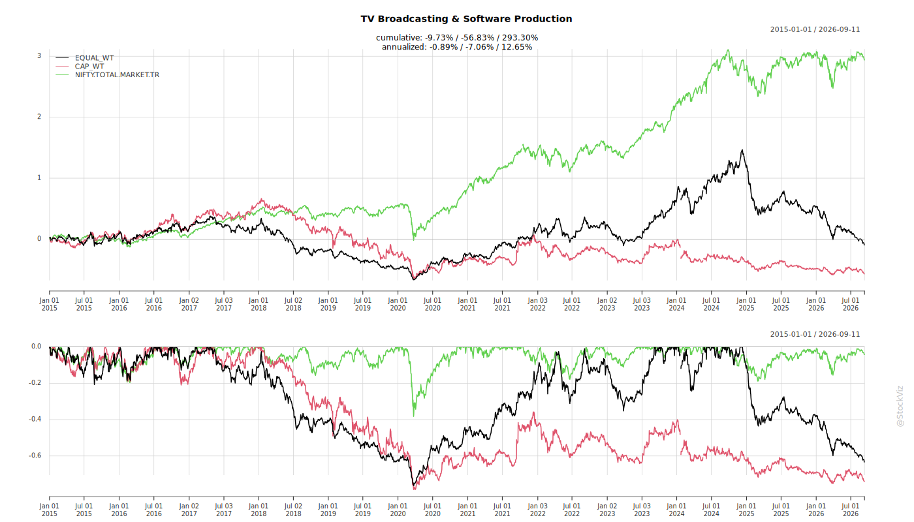
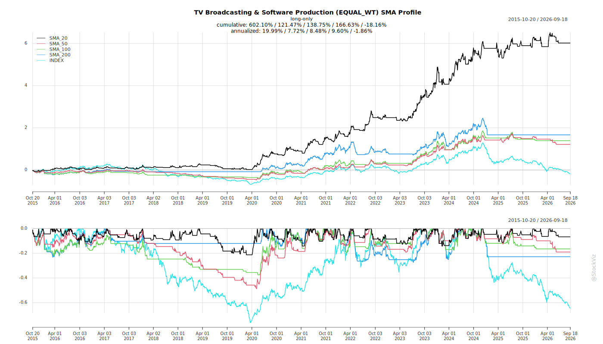
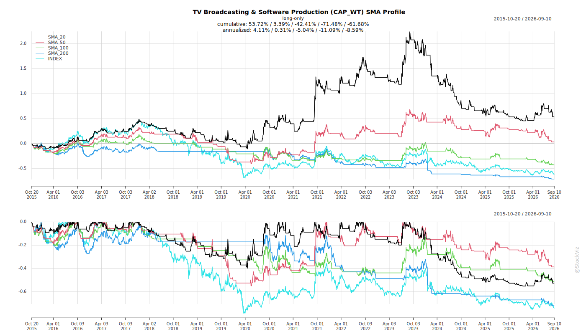
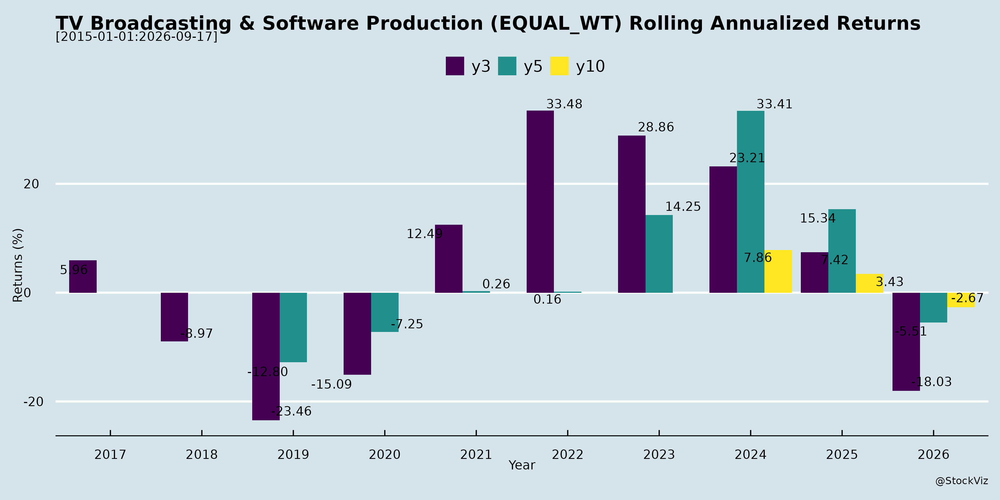
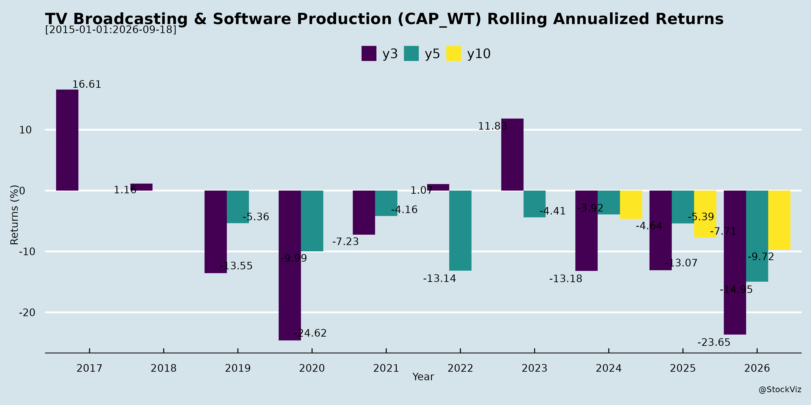

asof: 2025-11-27
Analysis of Indian TV Broadcasting & Software Production Industry
Using the provided documents (GTPL Hathway Q2/H1 FY26 Earnings Call Transcript and Zee Entertainment Investor Meetings Intimation) as inputs, the analysis focuses on key dynamics for MSOs/broadcasters like GTPL (cable TV, broadband distribution) and Zee (content/broadcasting). GTPL’s operational/financial insights reflect broader industry trends, while Zee’s update signals stable investor engagement amid sector challenges. The industry faces a shift from linear TV to bundled digital services amid competition from telcos/OTT/DTH.
Headwinds
Tailwinds
Growth Prospects
Key Risks
Summary: The industry navigates headwinds from competition and churn but benefits from stable margins, broadband tailwinds, and HITS-driven expansion. Growth hinges on HITS success, bundling, and wired broadband recovery (CAGR 8-11% targeted), with risks centered on execution and tech shifts. GTPL exemplifies resilience (revenue/EBITDA growth), while Zee’s IR activity suggests sector stability. Outlook cautiously optimistic for FY26 H2 recovery.
asof: 2025-11-27
Summary Analysis: Indian TV Broadcasting & Software Production Sector
Using the provided announcements as inputs (covering Q2 FY26 earnings, board outcomes, regulatory filings, and strategic updates from key players like Dish TV, Zee Entertainment, Zee Media, Sri Adhikari Brothers, TV Today, Sun TV, NDTV, and others), the sector faces structural shifts from linear TV/DTH to OTT/hybrid/digital models amid competition from streaming, mobile, and free TV. Below is a concise analysis of headwinds, tailwinds, growth prospects, and key risks.
Headwinds (Challenges Pressuring the Sector)
Tailwinds (Supportive Factors)
Growth Prospects
Key Risks
| Risk Category | Details | Examples from Filings |
|---|---|---|
| Financial | Negative equity (Dish TV: ₹36.5 Bn other equity loss), high debt (finance costs +3.9%), widening losses amid revenue volatility. | Dish TV balance sheet; EBITDA/net loss trends. |
| Market/Competitive | Elevated churn, shift to free TV/mobile/broadband/OTT eroding linear subs; marketing fee collapse. | Dish TV commentary. |
| Regulatory/Legal | GST demands, auditor changes signaling governance issues; SEBI compliance (e.g., materiality disclosures). | Zee Media SCN; Sri Adhikari auditor resignation. |
| Execution/Strategic | Pivot failures (e.g., AI data centre capex risks for legacy TV firm); deal terminations; fundraising withdrawals. | Sri Adhikari withdrawal of 1.5 Cr shares/6.8 Cr warrants; TV Today FM deal flop. |
| Macro | Inflation, forex depreciation; over-reliance on subscriptions (79.8% of revenues at Dish TV). | Dish TV financials. |
Overall Outlook: Sector in transition—headwinds dominate short-term (declining linear TV metrics), but tailwinds from digital diversification offer medium-term growth (OTT/AI/smart devices). Investors should monitor Q3 execution, regulatory resolutions, and pivot success (e.g., Sri Adhikari’s AI shift). FY26 recovery hinges on hybrid adoption amid ~₹3 Tn addressable TV household market.
asof: 2025-11-27
Analysis of Indian TV Broadcasting & Software Production Sector
Based on GTPL Hathway’s Q2/H1 FY26 Earnings Transcript (MSO/Distribution Perspective) and Zee Entertainment’s Investor Meeting Intimation
GTPL Hathway, as India’s largest MSO, provides insights into the distribution side of TV broadcasting (cable TV) and adjacent broadband/OTT bundling, reflecting sector dynamics. Zee’s update signals ongoing investor engagement amid content production challenges. The sector faces distribution headwinds but has tailwinds from digital convergence.
Headwinds (Challenges)
Tailwinds (Positive Factors)
Growth Prospects
Key Risks
Summary: The sector shows resilience (revenue/margin stability) but distribution headwinds from competition/churn cap growth. Tailwinds from broadband demand and HITS/ bundling offer 8-11% CAGR potential, with wired FTTH as a differentiator. Key to watch: Q3 HITS launch and subscriber recovery vs. wireless threats. Zee’s investor outreach suggests content-side stability amid distribution shifts. Overall outlook: Cautiously optimistic for FY26, prioritizing execution.
asof: 2025-11-27
Analysis of Indian TV Broadcasting & Software Production Sector
Using the provided documents from GTPL Hathway (cable TV & broadband MSO), NDTV (news broadcaster), and ZEEL (entertainment content provider) as inputs, this analysis covers headwinds (challenges), tailwinds (supports), growth prospects, and key risks for the sector in Q2 FY26 context. These companies represent key segments: distribution (GTPL), news (NDTV), and content production/broadcasting (ZEEL). Overall, the sector shows revenue resilience amid margin pressures and transformation efforts.
Headwinds (Challenges Pressuring Performance)
Tailwinds (Positive Momentum Drivers)
Growth Prospects (Future Opportunities)
Key Risks (Major Vulnerabilities)
Summary
The Indian TV Broadcasting & Software Production sector exhibits resilient revenue growth (10-12% YoY) driven by broadband tailwinds and content/events, but faces headwinds from margin compression (EBITDA/PAT declines) and TV stagnation. Growth prospects are strong in digital bundles, FTTX, and ESG-led sustainability, positioning leaders like GTPL/NDTV/ZEEL for H2 recovery. Key risks center on competition, costs, and macro uncertainties—mitigated by operational discipline. Overall outlook: Cautiously optimistic, with transformation yielding 10-15% sector revenue CAGR potential if execution succeeds.
Copyright © 2023 SAS Data Analytics Pvt. Ltd. All rights reserved.